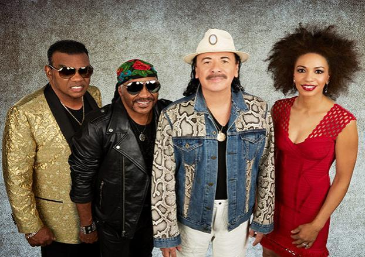

Carlos Santana is a famous Mexican/American guitarist.
He born in 1947 in a small town of Mexico City called Autlan de Navarro.
In 1955 he moved with his family to Tijuana, Baja California. He was interested with playing the guitar since he was a child and was into the music of B.B King, T-Bone and, John Lee-Hooker.
In 1961, his family moved again but, this time they moved to San Francisco, CA. He came and study English and took guitar lessons. When he came to San Francisco, the city was full of hippies, and it was there that Santana developed his peculiar style as a guitarist, his sound made of a mixture of Latin music and rock, without neglecting jazz or funk.
In 1965, he became American citizen.
In 1966, he created the Santana Blues Band. They played Rock with Latino sounds which made them unique.
In 1969, they got popular when they played at the Woodstock Festival with their Rock fusion and Afrocuban/ Latino ritm. In that same year, he released his album "Santana" and in 1970 he released "Abraxas". Those two albums got into the first place of the American Billboard for six weeks and, sold more than one million copies.
During his artistic career, he has won eight gold albums and, seven platinum.
In 1988, he won a Grammy for Best Instrumental Show and, he got a star at the Walk of Fame of Hollywood, CA .
His album Supernatural gave him 8 Grammys.
In 2003, The Rolling Stones listed him in number 15 of the 100 Best Guitarist of all the time.
If you would like to read more information about Carlos Santana's life and his works and achievements you can click this link.
Also, you can go to his website www.santana.com and check information about his Tour dates, album releases, news, photos, audios and much more!
